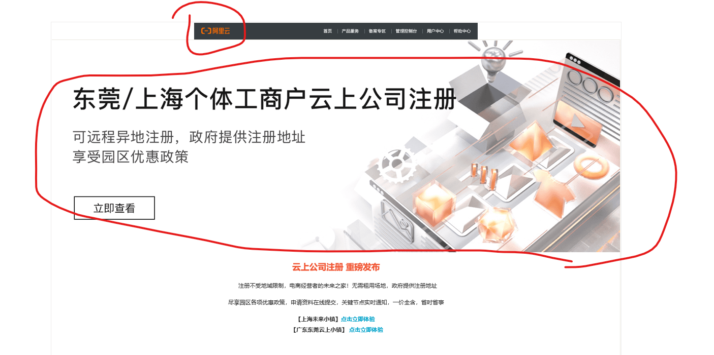
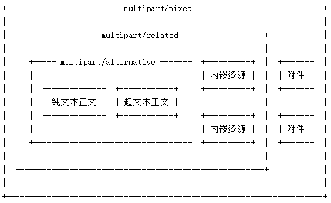
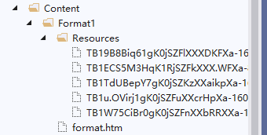

使用MailKit发送带有内嵌图片的邮件且图片不显示成附件
参考文章：MailKit---发送邮件
注意
在邮件客户端中是否显示内嵌图片为附件依据不同邮件有所不同，暂经测试Outlook和qq不显示为附件，新浪邮箱会显示附件。
概述
要发送一封带有复杂格式的邮件，且正文内容中带有复杂的图片，以一封阿里云发送的邮件为例，其中还有5张图片。现在想要使用MailKit这个库来发送邮件，邮件模板中也含有图片，该如何发送呢。

知识点
MIME-多用途互联网邮件扩展类型
一封含有复杂内容的邮件可以如下图表示，分为alternative、related、mixed三个部分，alternative部分包含纯文本和超文本内容，related包含alternative部分和内嵌资源，mixed部分包含related部分和附件。

文章中图片一般是作为图中的内嵌资源，所以不会出现在邮件的附件列表中。
实践
我们现在用这封阿里云的邮件作为模板，用MailKit发送这封邮件，且收到后的邮件效果相同。
准备工作
将邮件下载到本地，保存为Html文件，并将邮件中用到的图片资源下载下来，将Html文件和图片放在一个文件中一次作为一个模板。

代码实现
实现步骤主要问，组装正文部分包裹在alternative中，然后将alternative和内嵌资源包裹在related中，再将related用mixed包裹，将以上内容复制给邮件正文。
图片的链接进行格式处理，原：<img src="xxx/xxx/xx.jpg"/>，修改为<img src="cid:aaaaaaaa"/>。详见代码中射击ContentId部分。
使用bodyBuilder来构建邮件正文。具体见代码。
public bool SendEmailToSingle(string toEmail, string Subject, string FormatId)
{
try
{
var message = new MimeMessage();
message.To.Add(new MailboxAddress(toEmail));
message.From.Add(new MailboxAddress(EmailDisplayName, EmailUserName));
message.Subject = Subject;
// 获取邮件模板
string FullFormatPath = Path.Combine(Environment.CurrentDirectory, "Content", FormatId);
string[] ImgPaths = Directory.GetFiles(Path.Combine(FullFormatPath, "Resources"));
string HtmlFormat = string.Empty;
var builder = new BodyBuilder();
using (FileStream fs = new FileStream(Path.Combine(FullFormatPath, "format.htm"), FileMode.Open))
{
using (StreamReader sr = new StreamReader(fs, Encoding.GetEncoding("gbk")))
{
HtmlFormat = sr.ReadToEnd();
}
}
// 将图片加入内嵌资源，并更换邮件中的图片的链接
foreach (string imgpath in ImgPaths)
{
var image = builder.LinkedResources.Add(imgpath);
image.ContentId = MimeUtils.GenerateMessageId();
HtmlFormat = HtmlFormat.Replace(Path.GetFileName(imgpath), string.Format("cid:{0}", image.ContentId));
}
builder.HtmlBody = HtmlFormat;
message.Body = builder.ToMessageBody();
//return message;
using (SmtpClient client = new SmtpClient())
{
client.ServerCertificateValidationCallback = (s, c, h, e) => true;
client.Connect(EmailServerAddress, EmailServerPort, false);
client.Authenticate(EmailUserName, EmailPassword);
client.Send(message);
client.Disconnect(true);
}
return true;
}
catch (Exception)
{
return false;
}
}
发送后收到的邮件